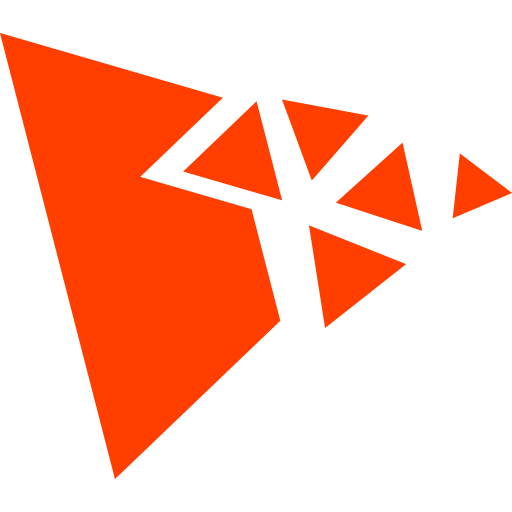

@newkrok/three-particles - v2.2.0

THREE Particles


Particle system for ThreeJS.
Features
- Easy integration with Three.js.
- Visual editor for creating and fine-tuning effects: THREE Particles Editor
- Highly customizable particle properties (position, velocity, size, color, alpha, rotation, etc.).
- Support for various emitter shapes and parameters.
- TypeDoc API documentation available.
Live Demo & Examples
- Editor & Live Demo: https://newkrok.com/three-particles-editor/index.html
- CodePen Basic Example: https://codepen.io/NewKrok/pen/GgRzEmP
- CodePen Fire Animation: https://codepen.io/NewKrok/pen/ByabNRJ
- CodePen Projectile Simulation: https://codepen.io/NewKrok/pen/jEEErZy
- Video - Projectiles: https://youtu.be/Q352JuxON04
- Video - First Preview: https://youtu.be/dtN_bndvoGU
Installation
NPM
npm install @newkrok/three-particles
CDN (Browser)
Include the script directly in your HTML:
<script src="https://cdn.jsdelivr.net/npm/@newkrok/three-particles@latest/dist/three-particles.min.js"></script>
<!-- or -->
<script src="https://unpkg.com/@newkrok/three-particles@latest/dist/three-particles.min.js"></script>
Usage
Here's a basic example of how to load and use a particle system:
// Create a particle system
const effect = {
// Your effect configuration here
// It can be empty to use default settings
};
const { instance } = createParticleSystem(effect);
scene.add(instance);
// Update the particle system in your animation loop
// Pass the current time, delta time, and elapsed time
updateParticleSystems({now, delta, elapsed});
Documentation
Automatically generated TypeDoc: https://newkrok.github.io/three-particles/